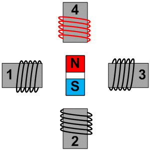

Moving microscopes with stepper motors
The motorised stage of our auto-scope project is working! Now that we have a platform to work on I thought I'd write a post about the motors we are using and how we can control them with Python.
On the subject of stepper motors
There are a lot of turtorals and guides about stepper motors aviable online. The most realevant refrence I have found is the video below "Stepper Motor Control with the Raspberry Pi" by Gaven MacDonald. It is a comprehensive overview of how stepper motors work, and how to control one using the Raspberry Pi.
We are using 28BYJ-48 stepper motors with ULN2003 drivers; they are small, cheap, and precise. You can find some technical details here.
A stepper motor is a brushless DC motor that rotates in steps. In contrast to a conventional brushed motor, that just spin, a stepper motor can be precisely positioned at any given step. This high level of control allows us to postion our microscope stage at any X,Y coordinate with minimal error.
We will send a specific sequence of signals to the 4 control wires of the stepper motor that will in turn activate a magnetic field and rotate the core. The GIF above shows a simplfied example of how our stepper motors work (if you'd like to see this in detial I suggest you watch Gaven's video above).
Making things move with Python
All of the code below can be found/run in this Google colab notebook.
Using the code below we can calulate the number of step CYCLES we'll need to rotate the motor 360˚. We will use half stepping to cotrol the rotaion of our motor's core. There are 8 steps for each cycle in the half stepping sequence. One revolution requires 8 cycles as the motor has 4 sets of 8 magnetic teeth. Factoring in the 1:64 gear box, the print statment on line 9 returns: '4096 steps are required for one revolution with half stepping'
So Python works pretting well as a calulator and the string formatting is nice.
We can also easily create a function that utilises our calulation to determine how many steps are required to turn any given number of degrees.
def number_of_steps_required(degrees): steps_per_degree = 4096/360 steps_required = steps_per_degree * degrees return steps_required number_of_steps_required(180) |
On line 1 we define our function with the def statment, it takes one argumnet 'degrees'. We then use whitespace (4 spaces) to indent the code that will run when our funtion is called, ending with the return statment on line 4. Calling the funcion with 180 as the 'degrees' argument (line 6) returns 2048.0. Try running this code yourself.
To control motors with our code we require an interface between softwear and hardwear. For our project we are using a Raspberry Pi. A Raspberry Pi (RPi) is a tiny, cheap, computer. These computers come equpied with programmable General Purpose Input Output (GPIO) pins. These pins allow us to interact with the outside world, via electial signals. Python provides an easy interface for controling the pins though it's RPi.GPIO library.
Let's start by wiring up our RPi as per the diagram above. Don't worry if you don't have a RPi, you can still run the code. Just come to our next meeting to try it for real :D
The specific GPIO pins we use doen't real matter, we just have to know which pins we have used as we will refer to them in the code.
I've used pins 17, 22, 23, 24 and they are connected inputs 1, 2, 3, 4 on the motor driver respectivly. For power I've connect a 5V power pin to the postive (+) terminal on the motor driver and the same for ground and negative (-).
The (stolen) code below will turn the motor 360˚. Lets go though what is happening line by line.
On the first 2 lines we import some required modules. There are over 150,000 Python packages on The Python Package Index (PyPI). So this import statment help us define which packages we'll be using.
On line 4 we set the mode of the of the pins to BCM, this allows us to select GPIO pins based on name instead of postion.
On line 6 we define a list of GIPO pins that we'll use to control the motor. It's important to remember that in Python the list index starts at 0. If you wanted to access the second element of this list you would use control_pins[1]
We can connect 4 of our Raspberry Pi's GPIO pins to the 4 control wires on our
wires diagram